Code
library(tidyverse)
theme_set(theme_bw())“Data has no meaning apart from its context.”
— Walter A Shewhart
Sherlock Holmes: “How do all these unusuals strike you, Watson?”
Dr. Watson: “Their cumulative effect is certainly considerable,and yet each of them is quite possible in itself”
— Sir Arthur Conan Doyle, The Adventure of the Abbey Grange
Exploratory Data Analysis (EDA) is exactly as it sounds: the process of exploring a data set, usually by visual examination, calculating summary statistics, and making tables and graphical displays. Exploratory analysis was likened to detective work by John Tukey (1977) in his seminal book. As in a detective story, the circumstances surrounding a crime can be accidental; it is important to keep in mind that not all patterns that you see in a sample data set will reflect true patterns in the population.
When analysing data, it is important to keep front of mind the purpose of the analysis. One can distinguish between the following two broad modes of analysis:
Exploratory or hypothesis-generating analyses are about discovering new patterns. Such analyses are typically rather unstructured exploration by summarising data and making tables and graphs, without any preconceived ideas about what might be found. The purpose is often to produce better understanding of a system, and is a good way of generating new hypotheses that can be tested with subsequent data/experiments.
Confirmatory or inferential or hypothesis-testing analyses are about testing a priori ideas. The ideas about what patterns would be present in the data were known to the analyst prior to seeing the data, often in accordance with some scientific theory about the mechanistic processes in the system under study. These analyses often take the form of fitting statistical models and performing formal hypothesis tests, and evaluating evidence for particular effects.
Here’s the important part: one must no report an exploratory analysis as though it was a confirmatory analysis. In other words, if an exploratory data analysis leads you to a new scientific hypothesis, do not report this as though it were an a priori hypothesis that you then tested with those data. This is scientifically dishonest and is a major contributor to the replication crisis in science (Ioannidis 2005). Taking a hypothesis that occurred to you after seeing patterns in the data, and using that same data to test that hypothesis, is a form of circular reasoning. The strength of any evidence obtained in this way is much weaker than if one tests a bona fide a priori hypothesis.
To address the issue of testing hypotheses with the same data that generated them, scientists are increasingly encouraged to publically preregister their scientific hypotheses before the data are even collected (Nosek et al. 2018). This guarantees that there was no “data snooping” for patterns prior to hypothesis testing.
So, if you have any a priori ideas and hypotheses about what patterns you might see in the data (e.g., the mean of \(y\) will be higher for group \(A\) than group \(B\)), before you look at or even collect the data, it is wise to write them down or, better still, formally preregister them. This will help clarify the purpose of the analysis, and reduce the risk of misrepresenting your results.
From the Center for Open Science website:
Preregistration separates hypothesis-generating (exploratory) from hypothesis-testing (confirmatory) research. Both are important. But the same data cannot be used to generate and test a hypothesis, which can happen unintentionally and reduce the credibility of your results. Addressing this problem through planning improves the quality and transparency of your research. This helps you clearly report your study and helps others who may wish to build on it. For instructions on how to submit a preregistration on OSF, please visit our help guides.

Of course, hypothesis-generating (exploratory) and hypothesis-testing (confirmatory) modes of analysis are by no means mutually exclusive. Calculating summary statistics and making tables and plots are an important part of inferential analyses, and one can use inferential statistics (e.g., confidence intervals) to summarise patterns seen in exploratory analyses.
See this blog post by Andrew Gelman for more on how the two modes fit together.
Following Chatfield (1995), here are some guidelines for tackling statistical analyses.
Make sure you understand the structure of the data, including what was measured, how, and why.
Write down the purpose of the analysis in the form of aims, research questions, and/or hypotheses, and make a plan for how to test any formal hypotheses, including evaluating the validity of assumptions.
Critically examine the data to check for errors, inconsistencies, and mismatches with the structure of the data as you understand it.
Explore the data with summary statistics, tables, and plots.
Conduct any inferential statistical analyses. Use statistics, tables, and plots to
Be honest and use common sense.
As discussed in Chapter 1, one must be congnisant to how the data were collected and any sampling biases that may be present. What is the population of interest, and is the sample representative of that population? Were the methods of recording the data accurate? Finally, what exactly does each variable represent? Are the variables contained in the data direct measurements of the variable of interest, or merely convenient surrogates?
The data are assumed to be in some sort of electronic form; e.g. text file, spreadsheet, database, etc. Before analysing the data, it is prudent to check for mistakes in the data. If one has access to the raw data (e.g. returned questionnaires), one can check observations by hand. If the raw data are not available, then the best one can do is to look for observations whose values are out of allowable ranges, or are very suspicious. A common problem occurs with the coding of missing information. Missing values are commonly recorded as a blank, *, -1, -999, or NA. Only one type of coding should be used. The use of NA is preferred since this is easier to spot. The use of blanks is particularly dangerous when one is exporting data from a spreadsheet to a text file. When the data from the text file is read into a computer package, a missing value may be skipped and the value from the next observation read in its place. When the data set is large, looking at a data set one observation at a time may not be feasible. In this case, plotting the data may show any observations with illegal values.
After any data errors have been found and corrected, the data understanding stage commences. This stage involves tabulating, summarising, and plotting the data in many ways to gain insight into the data set. We typically want to:
Again, don’t fall into the trap of data snooping, where you develop and test hypotheses with the same data. For instance, suppose that boxplots of the income of individuals in different age groups show that youngest and oldest age groups are the most different. If one elects to perform the hypothesis test for the difference between these two groups based on observations made during EDA, the resulting \(p\)-value is not valid.
In the sections below, we briefly review many common tools used to visualise data during EDA.
There are many methods for examining categorical variables. We will explore several methods, including tables, bar charts, dot plots, and pie charts. These tools are covered in foundation courses and hence we will briefly review them.
The rules for constructing a bar chart are very simple and perhaps they can be reduced to a single rule and that is to make the height of each bar proportional to the quantity displayed. Consider the dataset Snodgrass available in the R package archdata. This dataset contains information on the size, location and contents of 91 house pits at the Snodgrass site which was occupied between about CE 1325-1420. The variable names and their description are given below:
East: East grid location of house in feet (excavation grid system)South: East grid location of house in feet (excavation grid system)Length: House length in feetWidth: House width in feetSegment: Three areas within the site 1, 2, 3Inside: Location within or outside the “white wall” Inside, OutsideArea: Area in square feetPoints: Number of projectile pointsAbraders: Number of abradersDiscs: Number of discsEarplugs: Number of earplugsEffigies: Number of effigiesCeramics: Number of ceramicsTotal: Total Number of artifacts listed aboveTypes: Number of kinds of artifacts listed aboveThe data from 91 house pits at the Snodgrass site were reported by Price and Giffin in 1979. The layout of the houses follows a grid pattern with the long axis oriented north-east surrounded by a fortification trench. There is also evidence of an interior wall that may have separated the houses inside that wall from those outside the wall. Price and Griffin use differences in house size and artifacts composition to suggest that those distinctions may have reflected rank differences between the occupants of the two areas.
The distribution of number of Ceramics found can be displayed in the form of a bar chart; see Figure 1.
library(tidyverse)
theme_set(theme_bw())data(Snodgrass, package = "archdata")
Snodgrass |>
ggplot() +
aes(x = Ceramics) +
geom_bar()
The bar graph illustrates clearly that no ceramics were found in many houses but a lot were found in a few houses. This may be due to status and wealth of the occupants.
Note that we are treating number of Ceramics as ordinal in the above graph. For nominal data software tend to order the categories alphabetically.
However, a graph is not always the best way to display a small set of numbers. Graphs do have some disadvantages: they take up a lot of space, and they do not usually allow the recovery of the exact observations. For these reasons, particularly for a small data sets, a table is sometimes more effective. There were only three segment categories; and their counts can be simply displayed as a table.
table(Snodgrass$Segment)
1 2 3
38 28 25 It would be interesting to see whether the discovery of ceramics is Segment dependent. In other words, we would like to explore two factors in display. This can be done in many ways (Figure 2).
data(Snodgrass, package = "archdata")
p1 <- ggplot(Snodgrass) +
aes(x = Ceramics, fill = Segment) +
geom_bar() +
ggtitle("Bar plot with colour grouping")
p2 <- ggplot(Snodgrass) +
aes(x = Ceramics) +
geom_bar() +
facet_grid(vars(Segment)) +
ggtitle("Segment-wise Bar plots")
p3 <- ggplot(Snodgrass) +
aes(x = Ceramics, fill = Segment) +
geom_bar(position = "dodge") +
ggtitle("Clustered Barplot")
p4 <- ggplot(Snodgrass) +
aes(x=Ceramics, fill = Segment) +
geom_bar(position = "dodge") +
ggtitle("Clustered Bar plot - flipped") +
scale_fill_grey() + coord_flip()
gridExtra::grid.arrange(p1, p2, p3, p4, ncol=2)
It is easy to spot that the Ceramics findings were largely from the first segment. This EDA conclusion can be drawn from all of the above plots. However, these bar plots do not rate the same as a “presentation style graphic”.
Tufte (2001) argues in favour of certain principles of graphical integrity for presentation style graphics. These are:
The representation of numbers in a graph should be directly proportional to the numbers themselves;
Clear and detailed labels should be used to prevent ambiguity;
Provide explanations and important events pertaining to data on the graphic itself;
The graph should display data variation, not design variation—visual changes in the graph should be due to the data, not changes in way the data are drawn;
The number of dimensions used in the graph should not exceed the number of dimensions in the data;
Graphs must not quote data out of context; for example, a monthly drop in the murder rate of a city should be plotted within the context of the murder rate over the last few years, or murder rates in comparable cities over the same period.
A final point concerns the use of colour. In many sorts of graphs, data types are differentiated by the use of colour. This practice is perfectly legitimate, but one should be aware that a surprising proportion of people have impaired colour perception, such as being unable to distinguish between red and green (see here for colourblind-friendly pallettes). A remedy to these problems is to use different plotting symbols, line types, or shading, in conjunction with different colours. One should always make sure that the colours selected are clearly visible in the medium in which they are presented. Colours on a computer monitor can appear quite different when projected onto a screen in a lecture theatre, or when printed onto paper.
According to Tufte (2001), a good graphical display should:
Display the data;
Encourage the viewer to concentrate on the substance of the data, in the context of the problem, not on the artistic merits of the graph;
Avoid distorting, intentionally or unintentionally, what the data have to say;
Have a high data to ink ratio; that is, convey the greatest amount of information in the shortest time with the least ink in the smallest space;
Enable one to easily compare different pieces of data;
Reveal overall trends and patterns in the data that are not obvious from viewing the raw numbers;
Reveal detailed information secondary to the main trend; for example, the location of outliers, variability of the response.
This Chapter is largely concerned with EDA for discovery of patterns and peculiarities in a dataset. So we will not be too worried if the graphs produced are not aesthetically pleasing or does not meet a particular standard for a presentation style graph.
The end goal of most analyses is of course some form of written report or presentation. In either case, the findings of the study, should be supported by tables and graphs created during the EDA; these should clarify and support the final conclusions, not deceive or confuse the audience. One should refrain from showing all tables and plots that were created, but rather a careful selection that reinforces the main findings. The remaining figures can, if necessary, be placed in an appendix of the written report. The figures and tables that are shown should be well labelled and annotated. Abbreviations and cryptic variable names should be replaced by sensible labels and descriptions. The emphasis should be on conveying information rather than producing an eye catching plot. Special care should be taken to ensure that the table or graph cannot be easily misinterpreted.
In addition, a poorly made graph can be deceptive. This is a problem both in the understanding the data phase, and the presenting the data phase. One common mistake (but by no means the only one) in creating a graph is to use more dimensions to represent the data than there are data dimensions. For example, it is not uncommon to see a bar chart where the bars are drawn as three dimensional rectangular prisms. The false perspective actually obscures the differences in the heights of the bars.
Another pitfall is to use a clever graphic rather than one that clearly presents the data. The classic example of this is a pictogram, where pictures of varying size represent some quantities. Pictograms are often drawn dishonestly: to show a two-fold difference, each side of the picture is increased by a factor of two, so the area is in fact increased by a factor of four. Dishonesty in data presentation is clearly unacceptable. But even an honest pictogram is usually not the best way to present data. It is difficult to accurately judge differences between areas; which is what a pictogram asks the viewer to do.
Pie charts are a popular, though usually rather poor, way of presenting data. Like bar charts, they frequently use a large figure to represent just a few numbers. Pie charts also have a poor accuracy of decoding. That means people’s impression of the difference in size between two pie slices is often quite different from the actual difference in size. Pie charts use angles to represent percentages; people tend to underestimate the size of acute angles and overestimate the size of obtuse angles (Stevens, 1957). The exploded pie chart makes it more difficult to accurately compare pie slices: the exploded piece always appears bigger. The three dimensional pie chart is even worse. Bar charts, dot charts, or tables should be preferred to pie charts.
Count summaries of two categorical variables can be displayed in the form of a mosaic plot.
table(Snodgrass$Inside, Snodgrass$Earplugs)
0 1 2 3 4
Inside 21 10 5 1 1
Outside 50 2 0 1 0Figure 3 shows the above tabulated counts graphically. Evidently, greater number of earplugs were found outside than inside.
tab <- table(Snodgrass$Inside, Snodgrass$Earplugs)
mosaicplot(tab, main="Inside*Earplugs counts", ylab="Earplugs")
The R package vcd can produce many other types of plots for categorical variables but these plots require an understanding of models fitted to categorical data. Figure 4 displays the counts in a different way (and ignore the P value displayed in the plot). The test of association topic is covered later on.
library(vcd)Loading required package: gridassoc(tab, shade=TRUE, legend=TRUE) 
Spine plots are a special cases of mosaic plots that mimics stacked bar plots; Try-.
spine(tab) 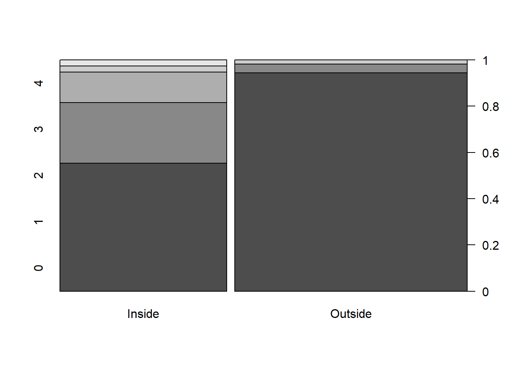
A doubledecker plot is used to handle many factors. These plots become harder to interpret when the number of categorical factor levels becomes large; Try-
doubledecker(Effigies~Inside+Segment, data=Snodgrass)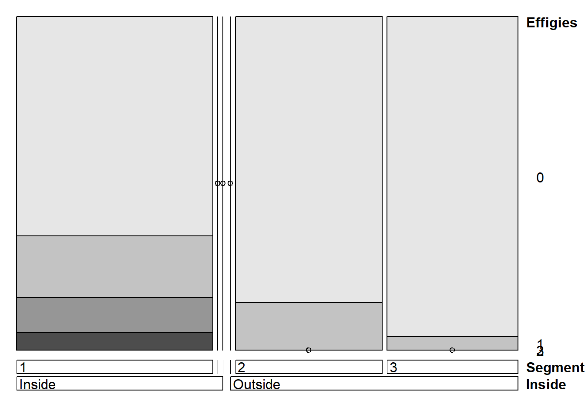
One of the simplest kinds of graph for a numerical variable is the single line (or one dimensional) graph. Each observation is represented by a point (or a star * or a dot .) on the line. These graphs can be useful to see the rough distribution and gaps, if any, in the data. Figure 7 shows a dotplot of Length of the house pits for the Inside and Outside groupings. Evidently privileged tribes lived inside in general, and the length of their dwellings is longer.
ggplot(Snodgrass) +
aes(x=Inside, y=Length) +
geom_dotplot(binaxis='y', dotsize=.5) +
coord_flip()
On reflection, the one dimensional dotplot gives rise to a second dimension wherever observations are identical or nearly the same. In a dotplot such points are usually stacked. As our eyes tend to pick up trends very easily, they tend to be distracted by the vertical changes. The main problem here is that some of the values which coincide by chance may be taken to represent real increases in density. To overcome this we try ‘jiggling’ or jittering the data, which is equivalent to plotting a random number on the vertical axis against the data values on the horizontal axis. It is suggested that the vertical jiggle be restricted to a small range so that the overall effect is that of a one-dimensional spread with greater, or lesser, density of points along the graph. Figure 8 shows a jiggled dotplot. You can decide for yourself which strategy is better.
Clearly, the use of jiggling is much more relevant for larger sets of data. Notice that with jiggling we are interested in the relative density of the graph in different places rather than in trends.
As the vertical reading is determined at random our eyes may be distracted by a seeming trend which is mainly due to this randomness. For this reason, it is helpful to try more than one plot with different jiggles. This is in the spirit of EDA, in which data is viewed from as many angles as is feasible. The other side of this coin is that conclusions from one display of data should be treated with some scepticism. The availability of computers allows data to be plotted, tabulated and transformed quickly, so we should look at it several ways to better appreciate the peculiarities inherent in our data.
In practice, one tends to avoid jiggling except in (two-variable) scatter plots where there are many repeated \((x, y)\) points. Graphs with a jiggle are mainly needed when the data are discrete or grouped in some way, or there are a large number of points to be plotted.

The histogram is a standard method of showing the distribution of a quantitative variable. A histogram is made by dividing the range of a variable into “bins” and counting the number of data points that fall within each bin. It is like a bar chart after forcing a quantitative variable into bins. It can be used for discrete ungrouped data, but a bar chart is generally more suitable for discrete data because histograms can mislead the reader into thinking that values exist other than at the centre of the intervals.
Figure 9 shows the histogram of Length. Clearly the distribution is far from symmetric and left skewed. The bimodal pattern also suggests subgrouping.
ggplot(Snodgrass) +
aes(x = Length) +
geom_histogram(bins=12,
color="black",
fill="white")
Notice that a different shape of histogram may result depending on the class intervals (bins) used (that is by choosing different class widths or different midpoints of the classes). This suggests that it may be wise to draw more than one histogram for a given data set particularly if statements are to be made about modes or gaps in the data. The guideline for the maximum number of intervals, \(L\), can follow the same formula as for stem-and-leaf displays. Some software use the Sturges (1926) formula namely \[\texttt{bin width} = \frac {\texttt{range}(x)} {\log_2(n)+1}.\] For fixing the width of the bins, the range of the data is divided by the sum of one and the base two logarithm of the sample size.
There are a few ways to scale the y-axis of a histogram, as shown in Figure 10:
Frequency histograms show the counts in each bin; the heights of the bars sum to \(n\).
Relative frequency histograms show the proportions or percent of data in each bin—the counts in each bin divided by the total; the heights sum to 1 or 100%.
Density histograms show the densities; the areas (heights \(\times\) widths) of the bars sum to 1.
p1 <- Snodgrass |>
ggplot() +
aes(x = Length) +
geom_histogram(bins = 20) +
ylab("") +
ggtitle("(a) Frequency histogram",
"Heights of the bars sum to n")
p2 <- Snodgrass |>
ggplot() +
aes(x = Length) +
geom_histogram(
bins = 20,
mapping = aes(y = after_stat(count / sum(count)))
) +
ylab("") +
ggtitle("(b) Relative frequency histogram",
"Heights sum to 100%") +
scale_y_continuous(labels = scales::percent)
p3 <- Snodgrass |>
ggplot() +
aes(x = Length) +
geom_histogram(
bins = 20,
mapping = aes(y = after_stat(density))) +
ylab("") +
ggtitle("(c) Density histogram",
"Heights x widths sum to 1")
library(patchwork)
p1 + p2 + p3
If, instead of drawing blocks over the class intervals as in a histogram, we join the mid points of the tops of the bars, we obtain a display known as a frequency polygon . If we use relative frequencies, it is a relative frequency polygon; see Figure 11.
ggplot(Snodgrass) +
aes(x = Length, y = after_stat(density)) +
geom_freqpoly( bins = 12, color = "black")
Figure 12 shows a kernel density plot, which is a method that produces a smoother density line.
Snodgrass |>
ggplot() +
aes(Length) +
geom_density() +
geom_rug(alpha = .3, colour = "darkorange2")
Kernel Density Estimation (KDE) is generated by dropping a little mini-distribution, usually a normal curve, on each individual point and summing them up (Figure 13).

These smooth plots are also useful to see the type of skewness involved, multimodality (several peaks) and unusual observations (or outliers). The disadvantage is that we may over-smooth and mask some of the subgrouping patterns; see Figure 14. Even though the two distributions appear to be similar, the length distribution for the Inside group has a larger mean/median etc (called the location parameters).
Snodgrass |>
ggplot() +
aes(x = Length,
colour = Inside) +
geom_density()
A histogram gives a general picture of the frequencies or relative frequencies of the data. If an observation is taken at random from the population from which the sample was drawn, the chance of it falling in any one of the class intervals should be approximately proportional to the area of the block over that interval (not exactly proportional because the histogram was only based on a sample from the population, not the population itself).
If we could draw a histogram for the whole population, then the probabilities would be exact. The relative frequencies form a probability distribution and if the class intervals are small enough the tops of the bars of the histogram would often approximate a smooth curve such as the density plot. In many cases this smooth curve is almost symmetrical with a rounded peak at the centre. One particular shape, fitting a certain mathematical formula, is a very good approximation to many sets of data. For instance, heights of people, weights of animals or yields of wheat all follow this distribution fairly well (although theoretically the distribution has an infinite range of possible values). One of the widely used theoretical distribution is called the Normal or Gaussian distribution but we will not bore you with its formula. However, most software can compute the tail areas (probabilities) under theoretical distributions. We shall study this distribution in greater detail in a Chapter 3. For the moment let us note that our EDA techniques should provide us with information about the parameters of the distribution, and we also want graphical techniques that display the continuous nature of the data.
Discrete data also have probability distributions and the bar graph gives a general picture of its shape. One commonly occurring discrete theoretical distribution is known as the Poisson distribution and approximates reasonably well the numbers of road accidents over a fixed time period. The main feature of a Poisson distribution is that there is a peak at the nearest integer below or equal to the average, and then a steady falling off. The mean is a parameter of the model, so we want our exploratory techniques to tell us about the mean, and to help us decide whether or not the Poisson model is appropriate for a given set of data. Theoretically, possible values are any whole positive numbers, but large numbers of accidents are very unlikely. Again, any graphical method we use must properly display the discrete nature of Poisson data. The other commonly adopted discrete distribution is the binomial distribution. This distribution is valid when the individual outcomes are classified into two categories such as Success and Failure.
For a small to moderate size batch of numbers, the stem-and-leaf display may reveal at a glance all of the peculiarities in the data. However it is useful, particularly for large batches, to calculate some statistics which capture the main features of the data. These are called summary statistics and they help us to gain an overall picture without being distracted by some individual peculiarities. You must be familiar with the common summary statistics such as mean, median, standard deviation etc.
The R default function summary() gives the mean, median, lower and upper quartiles, minimum, and maximum for a variable) as well as for a dataframe) For the length variable in our Snodgrass dataset, we obtain this default summary as
summary(Snodgrass$Length) Min. 1st Qu. Median Mean 3rd Qu. Max.
4.00 13.00 14.50 15.07 17.75 21.00 # Try summary(Snodgrass)We need used R functions such as sd() to obtain the standard deviation etc. Packages such as psych contain functions to get enhanced summaries. Try
library(psych)
describe(Snodgrass$Length)
describeBy(Snodgrass$Length, group=Snodgrass$Inside)For EDA purposes, Tukey (1977) suggested to generate further positional summaries using the concept of median. The sorted (smallest to largest) Length data from the Snodgrass dataset was presented earlier for discussing the stem plot. In total \(n = 91\) house pits were present, so that the median Length is the \(46^{\text th}\) value and equals 14.5. Notice that the median is in the middle of the distribution having 45 points on either side.
median(Snodgrass$Length)[1] 14.5A symmetry plot is based on the distance of left and right side points. If the underlying distribution is symmetric, the points on the left and right side would be roughly equidistant from the median. For the length data, we obtain the symmetry plot after writing a little R function as follows:
symmetryplot <- function(x)
{
require(ggplot2)
x <- na.omit(x)
m <- length(x) %/% 2
sx <- sort(x)
dfm <- tibble(
X = median(x) - sx[1:m],
Y = rev(sx)[1:m] - median(x)
)
dfm |>
ggplot() +
geom_point(mapping = aes(x=X, y=Y)) +
geom_line(mapping = aes(x=X, y=X)) +
theme(aspect.ratio=1) +
xlab("Distance below median") +
ylab("Distance above median")
}symmetryplot(Snodgrass$Length)
The points do not follow the \(45^\circ\) line where \(Y=X\); divergence from this line indicates a lack of symmetry.
If each half of the distribution is further divided in halves, we obtain the fourths or( hinges), as the medians for the lower and upper halves. The end points, the minimum and the maximum are called the lower and upper extreme values, respectively.
The R function obtains the set (minimum, lower hinge, median, upper hinge, maximum) in its function fivenum.
# Five number summary
fivenum(Snodgrass$Length)[1] 4.00 13.00 14.50 17.75 21.00A boxplot (or sometimes a box-and-whisker plot) is a visual display of the five-number summary, which can be used to assess the skew in the data. The components of a boxplot are explained in Figure 15.

The box shows the positions of the first and third quartiles, or “hinges”, and the thick middle line shows the median. As 50% of the observations fall between the first and third quartiles, the position of the box is important and is the first thing that catches our eyes. If the median is in the centre of the box, this suggests that the distribution may be symmetric; if the median is near one end, the distribution is skewed. In particular, if the median is in the right side of the box, it implies that the middle 50% of the data are skewed to the left. For right skewed data, the median will be placed at the left end of the box (as against in the centre of the box).
After having considered the ‘centre’ of a distribution, which we have measured by the median, and looked at where the bulk of the data lies, measured by the quartiles; then we are particularly interested in the strange, unusual values. They could be obvious mistakes (incorrectly coded, or decimal places in the wrong place, transposition of digits such as 91 instead of 19) or incorrect measurements or recording. These last two possibilities often occur before the data gets to the statistician so that it may be difficult to check whether these mistakes have occurred. Apart from obvious errors, we can only point to ‘far out’ values as being strange and we term them ‘outliers’. To help decide this matter, we define a few more terms, of which the most common one is the interquartile range or IQR, which is the distance between the first and third quartiles ( \(Q3-Q1\) ). Any observation which is more than \(1.5 \times IQR\) (sometimes called the “step”) less than the first or more than the third quartile can be considered a possible outlier (Figure 15.
Boxplots are ideal for comparing a few groups of data because they give a visual summary of certain main features of the distributions but they are not as cluttered as other displays. Common sense must prevail, for there is a limit to the amount of information that the eye can take in. Up to 10 or 12 boxplots can be plotted, preferably on the same scale; more than 12 could be confusing.
Shown in Figure 16 are the boxplots of Length for the Inside-Outside groupings. Note that the boxplots have been constructed on the same scale; that is, they have common (Length) axis.
ggplot(Snodgrass) +
aes(y = Length,
x = Inside,
col = Inside) +
geom_boxplot() +
coord_flip()
The boxplots in Figure 16 show that the general shapes of the distributions of Length are broadly similar. In each case, the median is near the centre of the box. The box of the Outside group is entirely to the right of the box of the Inside group, indicating that the distribution of Length is higher for the Outside group. We can also see that the Inside group may have greater spread than the Outside group.
For large datasets, a summary based on five numbers may be overly simple, showing too many ‘outliers’ and obscuring some structure in the more extreme range of the data. Hofmann, Wickham, and Kafadar (2017) describe an extension to the boxplot called the “letter-value plot”.
Like boxplots, letter-value plots include the median and the two middle fourths of the data. However, the whiskers are replaced by smaller boxes, representing ever-decreasing proportions of the data, such as eighths, sixteenths, etc., represented by letter values. The extent of this extra boxing depends on the quantity and shape of the data.
Letter values are defined by their depths, or distances from the nearer edge of the ordered data.
median: found at depth \(d(M) = (n + 1)/2\) where \(n\) is the number of observations
fourths: found at depth \(d(F) = \{\verb"int"[d(M)] + 1\}/2\) where \(\verb"int[]"\) refers to the integer part function.
eighths: found at depth \(d(E) = \{\verb"int"[d(F)] + 1\}/2\)
Similarly if we had enough data, we could extend further
sixteenths: found at depth \(d(D) = \{\verb"int"[d(E)] + 1\}/2\)
thirty-seconds: found at depth \(d(C) = \{\verb"int"[d(D)] + 1\}/2\)
and thus define points \(B, A, Z, Y, X,\) and so on.
Note the M, F and E could be termed measures of location. It is also helpful to have some measures of spread which indicate the variability in the distribution. One such measure, the F-spread, is the distance between the two F (fourths) values; that is, the inter-quartile range (IQR). Finally, the range is the distance between the two extreme points.
Another useful measure of location is obtained by averaging the two hinges which is termed the mid-fourth (or mid-F). If the distribution were perfectly symmetrical, the mid-F would be the same as the median. If mid-F is smaller (larger) than the median, the distribution is skewed to the left (right). Note that the mid values can be found at any depths.
See here for more details.
Letter values are displayed as a graph called letter value plot; see Figure 17. This type of plot is a better display than a boxplot for big data which tend to show many unusual points. Boxplots are suitable to moderate size datasets only. For large datasets, the skew may not be consistent within the data. The LV plot will show such anomalies in the skew patterns.
library(lvplot)
LVboxplot(Snodgrass$Length, xlab = "Length")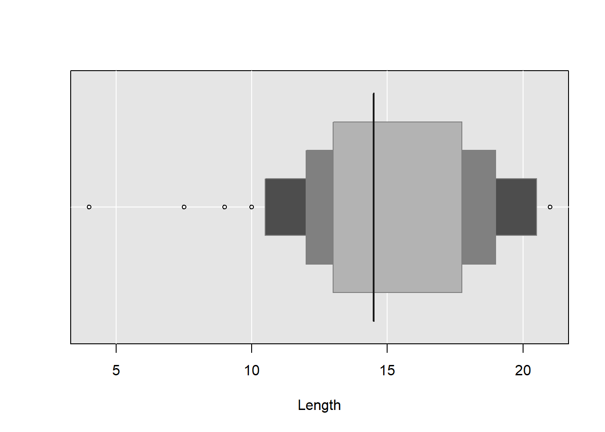
length dataA letter value plot showing the eighths is shown in Figure 18. Note that this LV plot does not have a whisker, but the points falling outside the eighths are tagged.
LVboxplot(Snodgrass$Length ~ Snodgrass$Inside, xlab = "Length")
Length by InsideIf we compare Figure 16 with Figure 18, we can see that the whiskers have been replaced with more ‘outliers’ and two extra boxes. The middle boxes are the same; they show the first and third quartiles. The smaller, darker boxes in Figure 18 show the first and seventh eighths.
Figure 19 shows a ggplot version of an LV plot for a big random data set.
set.seed(123)
library(lvplot)
data.frame(
y = c( rlnorm(n=1e4, mean = 10) ,
rnorm(n=1e4, mean = 5e5, sd = 1e5)
),
x = rep(c("Log-normal(10,1)","Normal(500k,100k)"), each=1e4) |> factor()
) |>
ggplot() +
aes(x=x, y=y, fill=after_stat(LV)) +
geom_lv() +
scale_fill_lv() +
coord_flip() +
theme_bw() +
xlab("")
When the data consists of individual points rather than grouped data, we first order the data from smallest to largest and we can plot the row numbers against these.
For the Length data from the Snodgrass dataset, we have shown the ordered values earlier. If we assume that these are evenly spread throughout the distribution, these 91 values divide the distribution into 91 even parts each containing a relative frequency of 1/91 = 0.010989. In the absence of information about Length of other house pits, the above assumption seems reasonable. It would have even stronger justification if this sample of 91 were chosen at random from the population of the of all house pits, but this stretches the imagination somewhat as these 91 observations are just a chance archaeological find of what was preserved. Nevertheless, we have no real reason to consider that they are not representative of the whole population Snodgrass house pits.
To find the cumulative relative frequency, we divide the column of row numbers by 91. There is a slight problem in that we do not know the smallest, and the largest Length. Hence we make an arbitrary decision that the smallest is likely to be 4 feet with cumulative relative frequency of zero and the largest 21 feet with a cumulative frequency of 1.
With the Length data, there is a slight hitch in that there is duplication of the values. This is not really a problem, so long as we ignore the cumulative frequency in the table which corresponds to each first repeated value. The frequency jumps by one at the value of each observation except when there is a repetition in which case it jumps by the number of repetitions. Having obtained the cumulative relative frequencies, we can plot these against the ordered Length values.
ggplot(Snodgrass) +
aes(Length) +
stat_ecdf()
Figure 20 shows the Cumulative Relative Frequency Curve. The procedure we described is a very basic one, and R software will get a better one where we make more assumptions on how to relate the observed data to the cumulative relative frequencies.
An important use of cumulative relative frequency graph is to find the quantiles of the distribution which is a general term for percentiles, deciles etc. For example, the \(50^{\text th}\) percentile or the 5\(^{\text th}\) decile (tenth) is the median which has 50% of the distribution up to, and including it. Any desired percentile can be found from the graph by drawing a horizontal line at the desired cumulative relative frequency and noting the value at which it cuts the curve. Figure 21 illustrates how the 30\(^{\text th}\) percentile can be interpolated for the Length variable. It is desirable to use software to draw the cumulative relative frequency curves or estimate the quantiles.
q30 <- quantile(Snodgrass$Length, 0.3)
ggplot(Snodgrass) +
aes(Length) +
stat_ecdf() +
geom_segment(
aes(x = q30,
y = 0,
xend = q30,
yend = .3),
colour=2,
arrow = arrow(length=unit(0.30,"cm"),
ends="first")
) +
geom_segment(
aes(x = 0,
y = .3,
xend = q30,
yend = .3),
colour=2,
arrow = arrow(length=unit(0.30,"cm"))
) +
scale_x_continuous(expand = c(0, 0)) +
scale_y_continuous(expand = c(0, 0)) +
ylab("ECDF(Length)")
The 25\(^{\text th}\) percentile is known as the lower quartile and the 75\(^{\text th}\) percentile is known as the upper quartile. The inter-quartile range (IQR) is defined as the difference between the upper and lower quartiles. The lower and upper quartiles will slightly differ from the lower and upper hinges for small data sets due to the differences in estimating the cumulative relative frequency function known as the empirical cumulative distribution function (ECDF).
The R function quantile() will get the quantiles easily. The following output shows the percentiles for Length data.
quantile(Snodgrass$Length, seq(0,1,0.1)) 0% 10% 20% 30% 40% 50% 60% 70% 80% 90% 100%
4.0 11.5 12.0 13.5 14.0 14.5 16.0 16.5 18.0 20.0 21.0 At times, two groups may have different numbers of observations but they may be similar in some ways and it may be appropriate to compare them. This comparison can be done in several ways but Q-Q plot is once such graph useful for such a comparison. The quantiles of the first batch is plotted against the quantiles of the second batch. A 45 degree \((Y=X)\) line is also drawn. If the points on a quantile-quantile plot fall along, or close to, the 45 degree line, then the two variables follow the same distribution; if they fall on a line parallel to the 45 degree line, the two variables follow similar distributions but one has a larger location parameter (say mean, or median) than the other; if the slope differs from the 45 degree line the variables have a similar distribution but have different scale parameters (say, standard deviations or F-spreads); if the plot is linear then the distributions of \(Y\) and \(X\) are different.
set.seed(12344)
X <- rnorm(100)
Y <- rnorm(100)
nq <- 201
p <- seq(1 , nq, length.out = 50) / nq - 0.5 / nq
p1 <- ggplot() +
aes(x = quantile(X, p), y = quantile(Y, p)) +
geom_point() +
geom_abline(slope=1, intercept=0) +
ggtitle("X & Y roughly follow\nthe same distributions") +
xlab("X quantiles") + ylab("Y quantiles")
X2 <- rnorm(100)
Y2 <- rnorm(100, 1)
p2 <- ggplot() +
aes(x = quantile(X2, p),
y = quantile(Y2, p)
) +
geom_point() +
geom_abline(slope=1, intercept=0) +
ggtitle("The distribution of Y has\na larger location (mean/median)") +
xlab("X quantiles") + ylab("Y quantiles")
X3 <- rnorm(100, 0, 1)
Y3 <- rnorm(100, 0, 2)
p3 <- ggplot() +
aes(x = quantile(X3, p),
y = quantile(Y3, p)
) +
geom_point() +
geom_abline(slope=1, intercept=0) +
ggtitle("The distribution of Y has\na larger scale (SD, F-spread etc)") +
xlab("X quantiles") + ylab("Y quantiles")
X4 <- rbeta(100, 1, 4)
Y4 <- rnorm(100, 0, 2)
p4 <- ggplot() +
aes(x = quantile(X4, p), y = quantile(Y4, p)) +
geom_point() +
geom_abline(slope=1, intercept=0) +
ggtitle("The distributions of X and Y \nare different") +
xlab("X quantiles") + ylab("Y quantiles")
gridExtra::grid.arrange(p1, p2, p3, p4, ncol=2)
In Figure 22, different kinds of quantile-quantile plots are shown; note the following three cases in particular.
\(Y\) and \(X\) follow similar distributions but the quantiles of \(Y\) are a constant amount greater than the quantiles of \(X\).
\(Y\) and \(X\) follow similar distributions but the standard deviation of \(Y\) is greater than that of \(X\).
\(Y\) and \(X\) follow different distributions.
Figure 23 gives Q-Q plot comparing the Length of house pits for Inside and Outside groups. This Q-Q plot suggests that the two distributions are similar but the average Length is greater for the Inside dwellings.
nq <- length(Snodgrass$Length)
p <- seq(1 , nq, length.out = 20) / nq - 0.5 / nq
X <- Snodgrass |>
filter(Inside == "Inside") |>
pull(Length)
Y <- Snodgrass |>
filter(Inside == "Outside") |>
pull(Length)
ggplot() +
aes(x = quantile(X, p),
y = quantile(Y, p)
) +
geom_point() +
geom_abline(slope=1, intercept=0) +
xlab("Length quantiles for Inside Group") +
ylab("Length quantiles for Outside Group")
Note that the distribution of two variables \(X\) and \(Y\) can be compared in a number of ways using boxplots, overlaid ECDF plots etc.
In earlier sections we have seen briefly how to compare two batches of data using boxplots, Q-Q plot etc. Several boxplots can be presented in a single display so that the distributions of the variables can be compared. An example is shown in Figure 24. Note that we can instead make dotplots instead of boxplots shown in Figure 25.
download.file(
url = "http://www.massey.ac.nz/~anhsmith/data/rangitikei.RData",
destfile = "rangitikei.RData")
load("rangitikei.RData")
ggplot(rangitikei) +
aes(y=people, x=temp) +
geom_boxplot() +
coord_flip()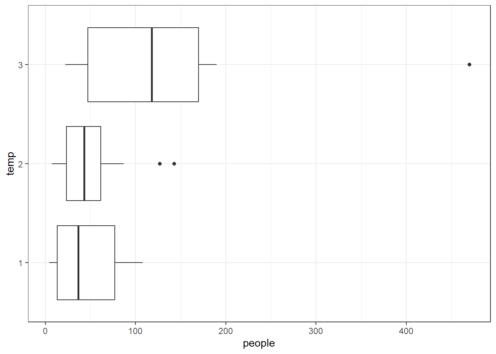
By the term faceting, we mean in a trellis or matrix like layout for graphing. A facet grid of plots is a matrix of panels of graphs defined by row and/or column faceting variables. A simple row grid of jittered dotplots is shown in Figure 25. This display shows that more people visited Rangitikei river when the temperature is moderate than when it is too low or high.
ggplot(rangitikei) +
aes(y=people, x="") +
geom_jitter() +
facet_grid(temp ~ .)
# Try + geom_jitter() + facet_grid(temp ~ wind)
# Try + geom_jitter() + facet_grid( ~ temp+wind)
Plots can also be wrapped for better comparison and discovery of patterns and peculiarities. More R instructions appear in the software handout and in course Shiny apps.
Consider data which can be written as pairs (\(X\), \(Y\)). The two groups of data (\(X\) and \(Y\)) need not be in the same units but they are assumed to be related in some way. Scatterplots are useful in exploring the type of relationship between \(X\) and \(Y\).
download.file(
url = "http://www.massey.ac.nz/~anhsmith/data/testmarks.RData",
destfile = "testmarks.RData")
load("testmarks.RData")ggplot(testmarks) +
aes(y=English, x=Maths) +
geom_point() +
coord_equal()
The data in testmarks.txt consists of the records of 40 students, at a school, on standard tests of comprehension of English and Mathematics. The test marks data can be graphed plotting English test scores against Mathematics test scores. The resulting graph, known as the scatterplot, is shown as Figure 26. This plot enables us to see if there is a relationship between \(X\) and \(Y\).
Here, the scatterplot shows a clear upward trend – as the Mathematics mark increases so does the English mark, in general.
There are a number of useful features that can be added to a scatterplot. The individual distributions of \(X\) and \(Y\) can be shown by adding appropriate graphical displays (e.g. boxplots) along the axes. If a number of the students have the same marks then it may be advisable to add a jitter as we discussed earlier.
library(ggExtra)
p1 <- ggplot(testmarks) +
aes(y=English, x=Maths) +
geom_point() +
coord_equal()
ggMarginal(p1, type="boxplot")
In Figure 27, it can be seen (with some effort) that each set of scores seems to be uniformly distributed along its axis, although the Maths marks exhibit gaps which may indicate different groups within the class.
Finally, does the variability in English marks change as the Maths mark changes, or is it fairly constant, i.e. does the vertical height of the scatter change from left to right? In this case the variability appears to be fairly constant (we will see why this is important later).
ggplot(rangitikei) +
aes(y = people, x = vehicle, col = loc, shape = loc) +
geom_point()
If the data is known to be grouped, then this can be shown on the scatterplot by using different symbols for each group. The data file Rangitikei.txt gives the number of people making recreational use of the Rangitikei River and the number of vehicles seen at a particular location and time. The data were collected at two locations (location being a categorical variable). The effect of location, if any, on the number of people and vehicles can be seen on a scatterplot if we identify each plotted point with a different symbol (or colour) depending on the location (see Figure 28). There appears to be little effect of location on the number of people and vehicles seen.
library(ggExtra)
p1 <- rangitikei |>
ggplot() +
aes(y=people, x=vehicle) +
geom_point() +
ggtitle("(A): All of the data")
p2 <- rangitikei |>
# remove the rows with highest value of 'people'
filter(people < max(people)) |>
ggplot() +
aes(y=people, x=vehicle) +
geom_point() +
ggtitle("(B): Without observation #26")
gridExtra::grid.arrange(
ggMarginal(p1, type="boxplot"),
ggMarginal(p2, type="boxplot"),
ncol=1)
Figure 30 shows the number of people against the number of vehicles seen as well as the distribution of each variable along the axes using boxplots (these are often referred to as marginal distributions). The first plot in Figure 30 (A) shows the scatter of all points, whereas the second one (B) shows the scatter with the very large value (Observation #26) removed. In the first plot the outlier shows up quite clearly in both boxplots. In the second plot the boxplot associated with the variable ‘people’ still shows one point as an outlier, though this doesn’t appear to be as extreme as the one in the first plot, and in the scatterplot the points fall close to a line which has a positive slope as is the case of Figure 30 (A). However, the distribution of each variable is skewed to the right.
Note that the case which produced the outlier in both the marginal distributions did not produce a scatterplot value that was in any way unusual. While this might not surprise us (the relationship between people and vehicles might be expected to stay the same even for a location with large numbers of each), it follows that an outlier with respect to the underlying relationship between two variables will be different from an outlier in the marginal distribution sense. And such a value may not be an outlier in either marginal distribution. Look again at Figure 27 - there is one student with a high Maths mark but a low English mark. While neither mark is unusual in itself, the point stands out from the rest of the scatterplot because it is unusually high or low (i.e. up or down) on the plot. In general an outlier with respect to the relationship between \(X\) and \(Y\) is one whose \(Y\) value is unusually large or small compared to other cases with similar \(X\) values.
download.file(
url = "http://www.massey.ac.nz/~anhsmith/data/horsehearts.RData",
destfile = "horsehearts.RData")
load("horsehearts.RData")library(ggExtra)
p1 <- ggplot(horsehearts) +
aes(y=WEIGHT, x=EXTDIA) +
geom_point()
p2 <- p1 + geom_smooth(se=FALSE)
gridExtra::grid.arrange(
ggMarginal(p1, type="density"),
ggMarginal(p2, type="density"),
ncol=1)`geom_smooth()` using method = 'loess' and formula = 'y ~ x'
`geom_smooth()` using method = 'loess' and formula = 'y ~ x'
Another example of a scatterplot is shown in Figure 30 which displays the weight of horses’ hearts against their exterior widths in the systole phase (that is the contracted phase)(data set horsehearts.txt). The scatterplot indicates that a straight line would not fit the data well. On the other hand, there is some evidence the weights fall into one of two subgroups (with a value around 2.5kg being the cut off point). Scatterplots are particularly useful in pinpointing possible groupings of points so that the structure of the data is revealed which might otherwise go undetected in descriptive statistics calculated for the full data set.
One way of quickly assessing whether a straight line fit is reasonable is to smooth the points in the plot using a LOWESS (LOcally WEighted Scatterplot Smoother) smoothed line. The lowess (also called loess) procedure is based on local sets of points (instead of the whole data set) at a given \(x\) range, and fits a smoothed line to the data. The second scatterplot in Figure 30 shows the lowess smoother which confirms that there is curvature in the underlying relationship- possibly a cubic curve would fit this.
We will use the data set horsehearts.txt of the weights of horses’ hearts in relation to other heart measurements to illustrate the measurement of correlation. As we have seen before, scatterplots provide a good starting point for exploring the type of relationship between two variables. In Figure 31, the weight, \(Y\), is plotted against the exterior width \(X\) (diastole phase in column 7 of horsehearts.txt). It is helpful to divide the scatterplot into four quarters, called quadrants, by drawing a line horizontally at the average \(Y\) value or weight (2.235kg) and vertically at the average \(X\) value (or diastole exterior width 14.13mm). The first quadrant is the top right hand side quarter. We move anti-clockwise for numbering the quadrants, and the bottom left hand side quadrant is called the third quadrant.

In Figure 31, most of the points fall in the third and first quadrants which indicates that there is an increasing relationship between the two variables (as the length increases, the weight tends to increase which is not too surprising!).
Although this scatterplot indicates a nonlinear relationship would fit better than a linear relationship, we will continue to use it for illustration. It is useful to have an objective measure of how strong a linear relationship is (as we have seen, stretching or compressing one or both axes can give different impressions). This measure is called the Pearsonian correlation coefficient between \(X\) and \(Y\) and is denoted by \(r_{xy}\) or \(r\) for short:
\[ \begin{aligned} r_{xy} &= \frac{{\text {sum}(x - \bar x)(y - \bar y)}}{{\text{squareroot}[\text {sum}(x - \bar x)^2 {\text{sum}}(y - \bar y)^2 ]}} \\ \\ &= \frac{\sum (x-\bar{x})(y-\bar{y}) }{\sqrt{\sum (x-\bar{x})^{2} \sum (y-\bar{y})^{2} } } \\ \\ &=\frac{S_{xy} }{\sqrt{S_{xx} S_{yy} } } \end{aligned} \]
Here \(S_{xx}=S_x^2\) is the variance of \(X\), \(S_{yy}=S_y^2\) is the variance of \(Y\), and \(S_{xy}\) is the covariance between \(X\) and \(Y\).
The (Pearsonian) correlation (coefficient) between WEIGHT and EXTDIA equals 0.759. Perfect correlation (+l) would occur if all points fell on a straight line in the first and third quadrants. Assuming a bivariate normal distribution, the null hypothesis that the true correlation coefficient \(\rho _{xy} =0\) can be tested using the test statistic \[t = \frac{{r_{xy} }}{{\sqrt {\frac{{1 - r_{xy}^2 }}{{n - 2}}} }}\] Statistical software programs directly give the \(p\)-value for this test. The estimated correlation coefficient of 0.759 for \((n-2)=44\) df is significant (\(p\)-value is close to zero). Testing of hypothesis related topics are covered in the next Chapter.
The scatterplot indicates that there may be two groups of horses; whose hearts weigh about 2.3 kg or more and whose heart weights are less than 2.3 kg. If possible, one should try to establish whether there are two groups for some reason (perhaps age, sex or breed). If the points tended to concentrate in quadrants 2 and 4, this would indicate that the correlation between \(Y\) and \(X\) is negative (as \(X\) increases, \(Y\) tends to decrease). If the points were evenly scattered among the four quadrants, the correlation coefficient would be close to zero.

Figure 32 shows a number of possible plots of \(Y\) against \(X\) and their associated correlation coefficients. Notice that the correlation coefficient may be close to zero even though there is a strong pattern present. This is because the correlation coefficient only measures the strength of the linear relationship between two variables. In the presence of subgroups the correlation coefficient can become spurious or even be close to zero when there is indeed the correlation is high within the subgroup. Simpson (1951) demonstrated that relationships noted within a population may not hold and could be the opposite within all subgroups. This amalgamation paradox can happen to most summary statistical measures including the correlation coefficient.
The other situation that is not shown in Figure 32 is that the correlation coefficient can be positive and a line would be a reasonable fit although the scatter diagram indicates that both \(Y\) and \(X\) have skewed distributions suggesting that transformations should be applied.

To see why the sign of \(r\) indicates the direction of the relationship, consider Figure 33.
Regardless of which quadrant the point is in, the contribution to \(S_{xx}\) and \(S_{yy}\) is positive, as these are sums of squares.
In the first quadrant the contribution of each point to the cross product \(S_{xy}\) is \((+) \times (+)\), that is a positive amount. In the third quadrant, each contribution is \((-)\times (-)\), that is a positive amount. This is the reason that the correlation coefficient is positive if most points are in the first and third quadrants.
Points in the second and fourth quadrant contribute negative amounts, \((-)\times (+)\) or \((+)\times (-)\), to the cross product \(S_{xy}\). If there are a considerable number of points in quadrants 2 and 4, the correlation coefficient will tend to be negative.
When there are more than two variables of interest, it is possible to draw scatterplots of each pair of variables but this becomes a bewildering exercise as the number of variables increases. One way to keep track of these plots is to set them out in a scatterplot matrix as in Figure 34 which is based on the data set pinetree.txt containing the circumference measurements of pine trees at four positions (Top, Third, Second and First) and in three areas of a forest. This plot also shows the simple correlation coefficients on the upper diagonal and smoothed density plots on the main diagonal of the matrix. This plot clearly shows that the variables are strongly related to each other. In particular, the Top circumference can be predicted reasonably well based on the bottom circumference. Even though the correlations are high, a quadratic model may fit better. Figure 34 seems to show a non-random pattern in the way points appear on the plot. This may be due to the Area effect because the circumference data were collected from three different areas. Figure 34 confirms that this is indeed the case.
download.file(
url = "http://www.massey.ac.nz/~anhsmith/data/pinetree.RData",
destfile = "pinetree.RData")
load("pinetree.RData")library(GGally)
ggpairs(pinetree, columns = 2:5)
It is also possible to use the colour option as well as the subgroup-wise correlation coefficients. Try
ggpairs(
pinetree,
columns = 2:5,
mapping = aes(colour = Area)
)The two-dimensional or the bivariate probability distribution of \(X\) and \(Y\) can be displayed as a 2-d smoothed density plot or as a probability contour plot. Figure 35 shows such plots. This figure rather suggests that there may be two separate joint probability distributions of Maths and English scores. This clue is not obtained in the scatter plot of English score against Maths score but only from the other three plots.
y = testmarks$English
x = testmarks$Maths
def.par = par(mfrow = c(2, 2))
plot(x, y, xlim = c(0,100), ylim = c(0,100),
xlab = "Maths Marks",
ylab = "English Marks",
main = "Scatter plot of English Scores vs Maths Scores")
f1 = kde2d(x, y, n = 50, lims = c(0, 100, 0, 100))
image(f1,
xlab = "Maths Marks",
ylab = "English Marks",
col=gray((0:32)/32), main = "Image Plot")
contour(f1,
xlab = "Maths Marks",
ylab = "English Marks",
main = "Density contourPlot")
op = par(mar=c(0,0,2,0)+.1)
persp(f1, phi = 45, theta = 30,
xlab = "Maths Marks", ylab = "English Marks", zlab = "density",
col = "gray", shade = .5, border = NA,
main = "Perspective plot (density estimation)")
par(op)
par(def.par)
In summary, scatterplots may reveal many properties and peculiarities about the relationship of \(Y\) to \(X\), namely
Trends: the overall trend may be positive or negative. It may be appropriate to fit a straight line or a curve.
Outliers: points which appear to be unusual, or outliers, may be evident. In a scatterplot, the outlier need not be in the extreme scale of both \(X\) and \(Y\), and anything appearing peculiar or as a rogue point must be investigated.
Gaps may be seen in the data which may indicate that different groups are present. On the other hand, if it is known that points belong to different groups, the points can be tagged with different symbols. The basic idea is to see whether different groups follow the same pattern or different patterns.
Variability of \(Y\) change with \(X\), or may be fairly constant. Clustering of points with smaller variability when compared to rest of the points may also be revealed in some scatterplots.
Both joint and marginal distributions of \(X\) and \(Y\) are important. We also consider the distribution of each variable separately, and explore whether they have symmetric distributions or not.
A short-cut to explore three numerical variables is to obtain a contour plot. In Figure 35, the contours were the joint density of Maths and English marks. Instead, we can just use three numerical variables and show the third variable (Z) as a contour on a scatter plot of Y vs. X. What this means is that several combinations of X and Y can lead to the same Z. So we have to use some smoothing method or a model to obtain the contours and form a grid. The R package plotly is rather simple and powerful to obtain dynamic or interactive plots. The plots produced with this package are colour optimised for viewing and hence they may not be the best for printing but good for EDA purposes. We can also hover over the graph and view the graphed data. After loading the pine tree data, try-
library(plotly)
plot_ly(type = 'contour',
x=pinetree$First,
y=pinetree$Second,
z=pinetree$Top)For the Snodgrass data, the contour plot of East (X) vs, South (Y) vs. Area (Z) is shown in Figure 36. This plot shows that bigger house pits are inside the X and Y axis show the geolocations.
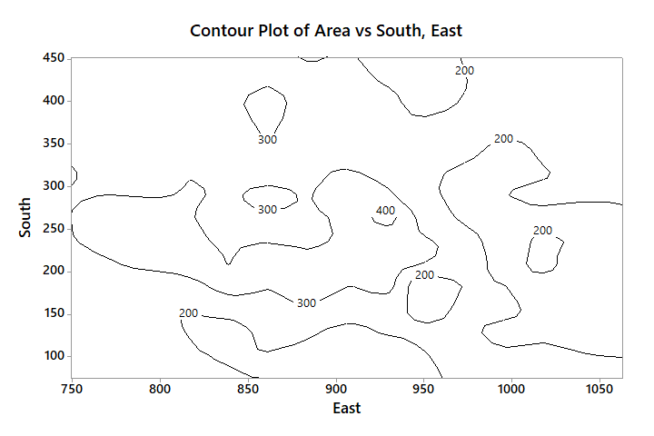
A bubble plot is another option where a scatter plot shows the third variable as the size of the bubble on a scatter plot. This type of plot can be restrictive for some datasets depending on the variability involved in the third variable. Figure 37 shows the location of the house pits and total Area. This plot not only gives the spatial view of the tribal area but indirectly reveals the clustering of house sizes.
ggplot(Snodgrass) +
aes(x=East, y=South, colour=Area, size=Area) +
geom_point()
Using the appropriate software, it is possible to explore three variables using a 3-D scatter plot. We explore the pinetree data in Figure 38 which clearly shows the strong relationships and the Area effect. The other forms of exploring 3 variables include 3-D surface plots.
library(lattice)
cloud(Top ~ First+Second, group=Area, data=pinetree)
R packages such as rgl and plotly allow rotations of axes for graphical exploration of the relationships among variables, detection of peculiar points etc. It is easy to miss the form of relationships if proper rotational exploration is not done. Try:
library(rgl)
plot3d(Snodgrass$East, Snodgrass$South, Snodgrass$Area)plotly is great for interactive 3d plots (though they only work with HTML, not PDF).
plot_ly(Snodgrass, x = ~East, y = ~South, z = ~Area) |>
add_markers()If we wish to examine the relationships between (three or more) variables we could do so with a conditioning plot, otherwise known as a coplot. A coplot is a scatterplot matrix where each panel in the matrix is a scatterplot of the same two variables, whose observations are restricted by the values of a third (and possibly a fourth) variable.
coplot(Top~ First | Second*Area, data = pinetree)
The coplot in Figure 39 shows that pine trees are not maturing well in Area 3, given that fewer points are on the right hand side of the graph when compared to Areas 1 and 2.
Obviously we cannot to visualise several dimensions easily but there are few shortcuts for multivariate data visualisation such as the Chernoff or cartoon faces plot. This type of plot is based on our ability to recognise features in human faces. This type of plot is suitable for small datasets and identify unusual observations, for example observation #46 in horsehearts data shown in Figure 40.
effect of variables:
modified item Var
"height of face " "INNERSYS"
"width of face " "INNERDIA"
"structure of face" "OUTERSYS"
"height of mouth " "OUTERDIA"
"width of mouth " "EXTSYS"
"smiling " "EXTDIA"
"height of eyes " "WEIGHT"
"width of eyes " "INNERSYS"
"height of hair " "INNERDIA"
"width of hair " "OUTERSYS"
"style of hair " "OUTERDIA"
"height of nose " "EXTSYS"
"width of nose " "EXTDIA"
"width of ear " "WEIGHT"
"height of ear " "INNERSYS"
Exploration of higher dimensional data requires further theory. Reduction of dimensions and display of crucial information using newly generated variables based on the theory of multivariate statistics are the natural way to explore higher dimensional data. Many such approaches are taught mainly in 300 level papers. A couple of such methods are explained below:
One of the tricks to handle multidimensional data is to reduce the number of dimensions using principal components. These are simply linear combinations of the original variables and may not have physical meaning. In some cases, we may be able to identify a latent variable that represents such a linear combination of variables. For example, physical endurance is latent but can be measured indirectly using many variables such as time taken to run 100m, maximum weight lifted etc. The first principal component (PC) is found in such a way that it accounts for the most variation in the data. The second principal component is found independent of the first in such a way that it accounts for the most variation that is not explained by the first principal component. The following output shows that the first two components are sufficient to explain most (>98%) of the variation in the four numerical variables in the pinetree dataset.
fit <- prcomp(pinetree[, -1], scale. = TRUE)
summary(fit)Importance of components:
PC1 PC2 PC3 PC4
Standard deviation 1.9579 0.32825 0.19678 0.1415
Proportion of Variance 0.9584 0.02694 0.00968 0.0050
Cumulative Proportion 0.9584 0.98532 0.99500 1.0000# Try autoplot(fit)A biplot aims to show both the observations and variables in the same plot formed by the first two principal components. Figure 41 shows the biplot for the pinetree variables and data.
library(ggfortify)
autoplot(fit, loadings = TRUE, loadings.label = TRUE)
For interpreting the biplot, consider the following patterns:
If points that are close to each other, it means observations with similar values. So you can spot the odd ones.
The correlation between variables is indicated by the cosine of the angle between vectors displayed for the variables. Highly correlated variables will point in the same direction. If variables are uncorrelated, they will be at right angles to each other. For the pine tree data, we notice high correlation. This has implications in model building. We may not need all of the three predictor variables of Top. More will follow in later Chapters.
The cosine of the angle between a vector and an axis indicates the contribution of the corresponding variable to the axis dimension. Look particularly the X-axis that represents the first principal component. The variables contribute somewhat the same.
Note that the biplot is not useful if the first two principal components account for only a small part of the overall variation. We can also examine relationship between the categorical factors and the principal components but this topic is skipped in this course.
A Time Series is an ordered sequence of observations of a variable(s) (often) made at equally spaced time points. Time series data may have internal structures such as trends, seasonality, cycles etc. Such internal structural variation is largely absent in randomly collected data which are observed one-at-a-time (called cross-section data). Time series data analysis is useful in business and economic forecasting, stock market analysis, quality control etc. The objective of time series analysis is to understand the structure that generated the time-oriented data, fit a model, monitor and forecast if necessary.
Consider the value of $20 notes (in NZ$ millions) that were in the hands of the New Zealand public (as at last the Wednesday in March each year) for the time period 1968 onward available at the Reserve Bank of New Zealand website https://www.rbnz.govt.nz/statistics/f3. Figure 42 shows the time series plot of the $20 notes series.
# Load the data
notes20 <- read_table(
"http://www.massey.ac.nz/~anhsmith/data/20dollar.txt") |>
pull(value)
── Column specification ────────────────────────────────────────────────────────
cols(
year = col_double(),
value = col_double()
)library(forecast)
NZnotes20 <- notes20 / 1000 # converting to millions
NZnotes20 <- ts(NZnotes20, start=1968, frequency=1)
autoplot(NZnotes20,
xlab="Year",
ylab="Value of $20 notes (millions)")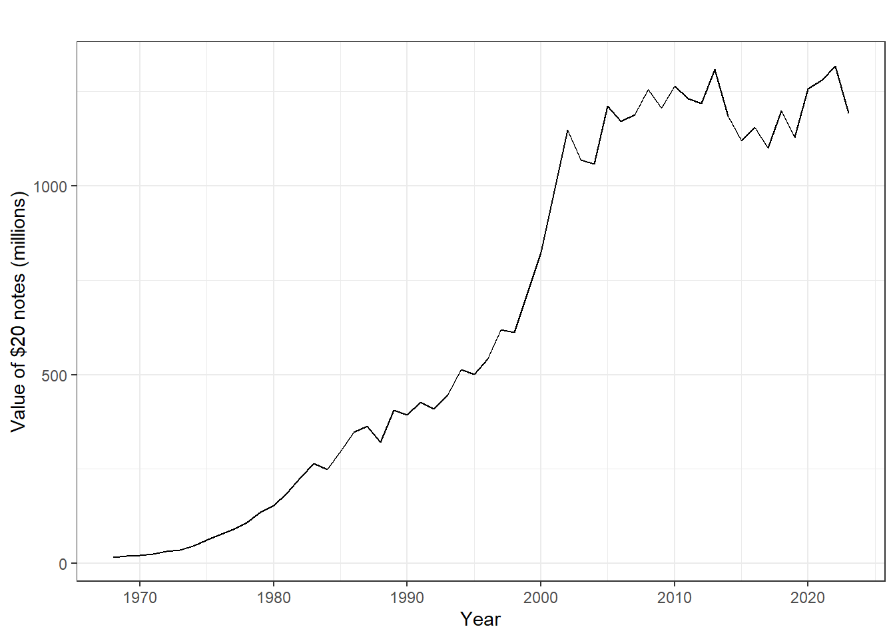
It is easy to see the ‘growth effect’ of time on the value of $20 notes held by the public. The amount of $20 bills held by the public is affected by various known and unknown factors which are correlated with time. This allows us to conveniently treat ‘time’ as the single explanatory variable representing several other factors (variables). We also note other types of structural variations such as mild cycles (in addition to the exponential trend in the beginning and then settling in the recent years) that are time oriented in Figure 42.
In order to study seasonal variation, yearly series such as $20 bills series are inadequate. We will be needing a series observed in shorter term such as daily, weekly or monthly. The monthly credit card balances in New Zealand is available at https://www.rbnz.govt.nz/statistics/c12. This series begins from Dec 2004. We import this data first in R /RStudio and consider the (daily average) outstanding credit card balances (in million $).
library(readxl)
url <- "http://www.massey.ac.nz/~anhsmith/data/hc12_daily_average_balances.xlsx"
destfile <- "hc12.xlsx"
curl::curl_download(url, destfile)
hc12b <- read_excel(destfile, na = "-", skip = 4)The time series plot of the outstanding credit card balances series is shown in Figure 43. This series shows strong trends as well as seasonality. In the next section, we will discuss how to assess the features of a time series further.
credit.balance <- hc12b |>
pull(CRCD.MOA20) |>
na.omit() |>
ts(start=c(2000,7), frequency=12)
forecast::autoplot(credit.balance, xlab="Year", ylab="Rate")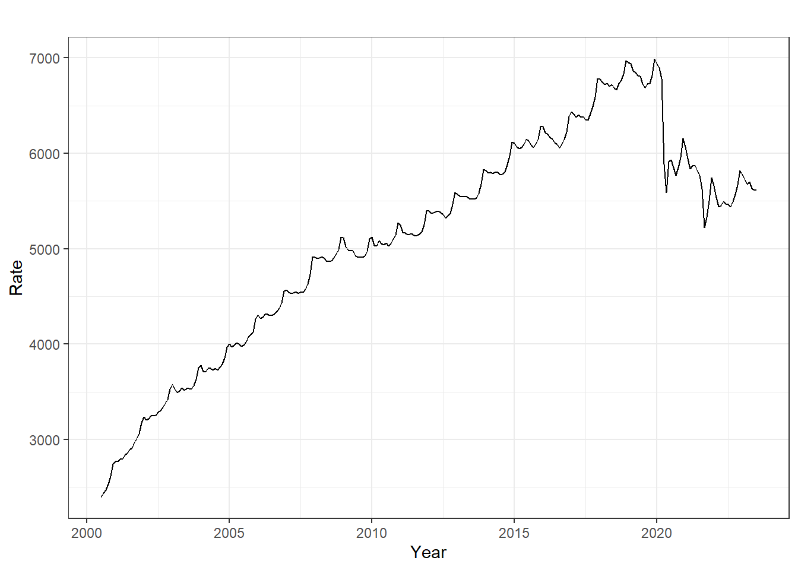
Time series data are not often independent and there often exists a relationship between the current observation \(X_t\) at time \(t\) with the past observations \(X_j\) \((j=t-1, t-2, \ldots, 1)\). The term first order lag refers to \(X_{j-1}\) for \(X_j\). In general the \(k^\text {th}\) lag refers to a past observation of \(k\) periods back. We may explore the time related linear dependency in time series data using lagplots. Figure 44 is a lag plot for the NZ $20 series.
gglagplot(NZnotes20)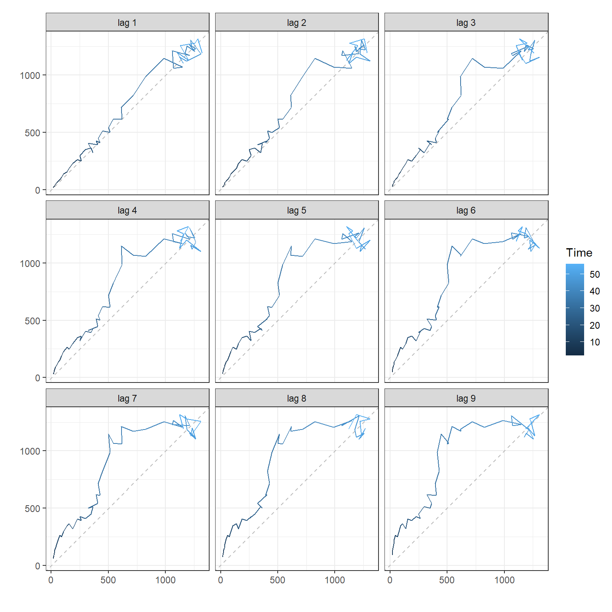
This plot suggests that the time related dependency is rather strong for lower order \(k\) but the lag effect diminishes when \(k\) becomes large . This is a good thing because we can use recent lagged data as predictors in our models.
By the term autocorrelation we mean the simple correlation between the observations but lagged back one or more time periods. For a given lag \(k\), the sample autocorrelation function (SACF or simply ACF) is defined as
\[r_{k} = \frac{ \sum \limits_{t=k+1}^N (y_{t}-\bar{y})(y_{t-k}-\bar{y})} {\sum \limits_{t=1}^T (y_{t}-\bar{y})^2}\]
where \(N\) is the length of the time series. SACFs can be used to make a tentative assessment of the terms or order of the model. Figure 45 is the plot of SACF values (called ACF plot or correlogram) for the NZ $20 series.
ggAcf(NZnotes20)
This graph shows that the autocorrelations decay to zero (implying that the value of $20 notes in public hands positively depend on the values of $20 notes held in the immediate past rather than the distant past). The significance of autocorrelations may be judged from the 95% confidence interval band. More on this later.
We also plot the partial autocorrelations instead of autocorrelations. Partial Autocorrelation Function (PACF) at a given time is without the linear effect of other lags. Figure 46 shows the PACF plot for the ‘$20 Notes’ series. Only the first PACF is significant and not the rest. This means that the first lag is sufficient and the rest may not be needed for modelling.
ggPacf(NZnotes20)
Both ACF and PACF plots are useful to assess the time series components which is discussed next.
The nature of structural variations in a time series are broadly classified under three major headings:
The trend component is to represent long term positive (upward) or negative (downward) movement. See Figure 47 below which lists some of the parametric models for fitting the trend component:
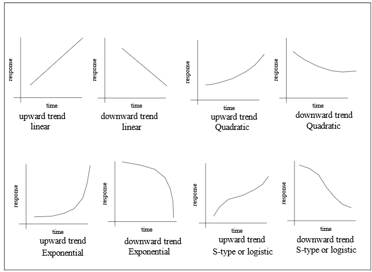
We will cover more on fitting models to capture the trend later on.
The seasonal component is to account for the periodic behaviour happening within a block (say Christmas time) of a given time period (say in a calendar year) but this periodic behaviour will repeat fairly regularly over time (say year after year). Seasonality is often present in business related time series data. EDA tools are useful for judging the presence of seasonality. A simple scatterplot of the response variable against time may reveal seasonality directly. Figure 48 is a time series plot of monthly means of Erythemal UV, the sunburn causing UV, measured at Lauder (45.0S, 169.7E), New Zealand (uv.txt).
library(readr)
uv <- read_table("http://www.massey.ac.nz/~anhsmith/data/uv.txt") |>
pull(erythemal.uv) |>
ts(start = c(1990, 01), frequency = 12)
forecast::autoplot(uv, xlab="Year", ylab="Erythemal UV")
Seasonality is more easily seen graphically when two or more grouping variables such as month is used to subset the data as has been done in Figure 49. All tools of EDA covered in this Chapter such as boxplots etc will also be useful to explore seasonal effects. The autocorrelation plot is also useful for detecting seasonality.
# monthplot(uv) or
ggsubseriesplot(uv)
A different version of the plot, known as season plot, can also be used; see Figure 50 drawn for the credit balances data. This plot shows the month related seasonal effects over the years. We can also assess whether the seasonal effect is the same for various years or not using this plot.
ggseasonplot(credit.balance, year.labels=TRUE)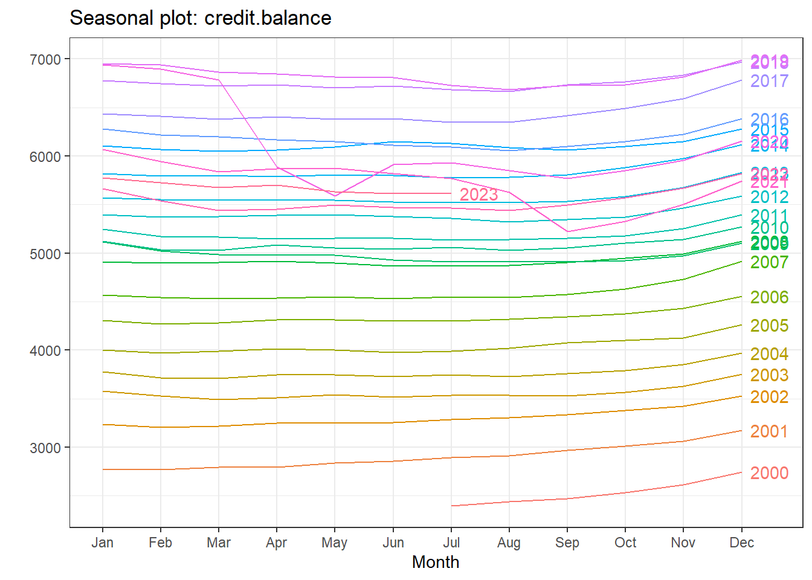
The ACF plot is also useful to assess seasonality. Figure 51 shows a scallop pattern which is attributed to seasonality.
ggAcf(uv)
Spectral plot is another graphical technique for examining cyclic structure of variation in time series data. This plot is based on a sinusoidal model. The cycle frequency is expressed per unit of time where a unit of time is the distance between 2 time series points. A frequency of 0.5 means a cycle of 2 time series data points. Methods are available to determine the amplitude and the dominant frequency etc under the sinusoidal model.
This component of the time series is to account for the random or irregular movement in the series. Ideally the plot of errors should not show any time effect; for example plotting a set of random normal data will not show any of the systematic time related components, see Figure 52. Such a series is called a white noise series.
set.seed(123)
whtnoise <- ts(rnorm(120), start=1, frequency = 12)
forecast::autoplot(whtnoise,
xlab="time",
ylab="N(0,1) random data")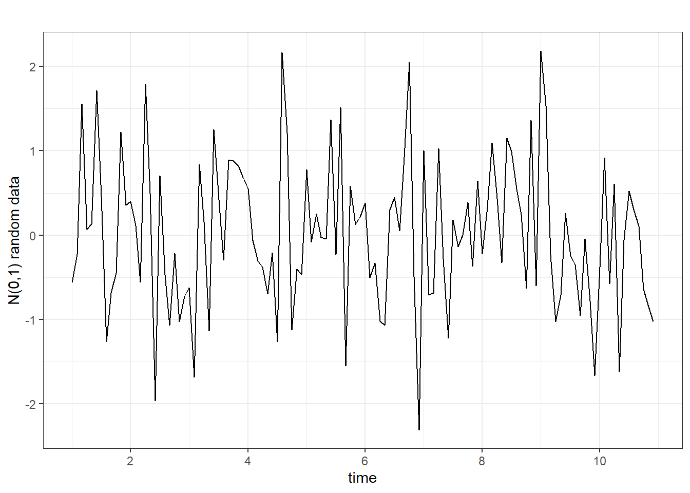
The ACF plot of our white noise series is shown in Figure 53. As you would expected, the ACFs are small in size and not significant. The ACFs also do not die out in any systematic pattern too.
ggAcf(whtnoise)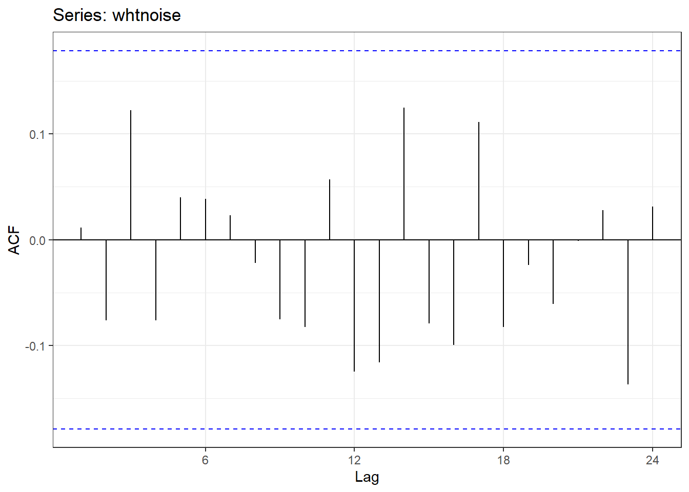
It is the practice to assume a typical structural interrelationship between the trend, seasonal or cyclical components of a time series. This may be done using an additive model for the observation at time \(t\) say \(X_t\) as
\(X_t\) = Trend + Seasonal + Error
or, using the multiplicative model,
\(X_t\) = Trend \(\times\) Seasonal + Error.
The multiplicative model takes the interaction between the components into account whereas the additive model assumes independence of the components. We have not explicitly considered the cyclical component of variation in the models and assume that the either the trend or the seasonal part of the model will include it.
Consider the UV series, which is a short time series. Hence this series may not reveal secular (long term) trend or cycles. Figure 54 shows the decomposition done for the UV series. While this plot is useful in revealing the seasonality, trend component is probably over-fitted.
The associated standard error bars also appear on the RHS side of the plot and the trend estimation is done poorly after all.
uv |>
decompose(type="additive") |>
forecast::autoplot() +
ggtitle("")
The classical decomposition done for the credit card balances data is shown in Figure 55. For this series, the trend component is strong and estimated well. The seasonal component is weaker and not estimated well at all.
credit.balance |>
decompose(type="additive") |>
forecast::autoplot() +
ggtitle("")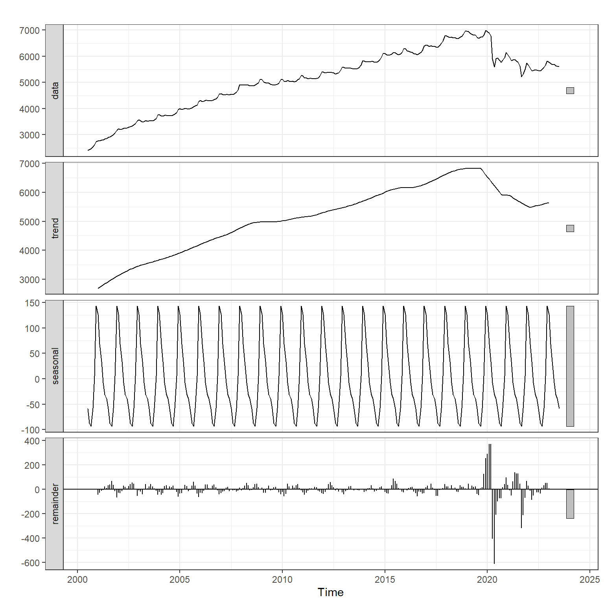
There are many approaches to decomposing the components of a time series. Some are designed to improve forecasting. These methods are covered in higher level statistics courses.
By the term detrending, we mean the process of removing the trend from a time series. This can be model based. For example, we may fit a S-type logistic model and the residuals of this model is called the detrended series, which mainly contains the seasonal and error components of variation. The other approach to detrending is to apply differencing which is discussed later on. There are also nonparametric approaches to fitting trends. For example, the moving average smoothing (discussed in a later Chapter) can be treated as fit (filter) and the residuals after smoothing can be regarded as detrended data.
By the term deseasoning we mean the process of removing the seasonal component of the variation in a time series. For example, we may use a regression approach to deseason the series after fitting the model with seasonal indicator variables. We may also use seasonal differencing or use trigonometric functions for deseasoning.
It is not always easy to completely separate trends from seasonal effect but time series decomposition helps us to understand the underlying complexities.
R packages are available for exploring spatial data, particularly for integrating with maps. Some software programs also employ audio to augment exploration of higher dimensional data. Plots for EDA are introduced at an introductory level in this Chapter but there are many dedicated R packages available for conducting EDA in a specialised area such as finance or ecology.
The first step in EDA is to familiarise oneself with the data. The dataset should be checked for errors. This is particularly important if this is to be the first time the data will be analysed. It is essential to know story behind the data such as the objectives for the collection of the data, and in what way was it collected etc. The answers to these questions should provide the focus for our own analysis of the data; i.e. what questions do we want to be able answer by our analysis of the data. Note that data may not always contain an answer to the questions we may have.
Our exploratory analysis now proceeds by attempting to understand the structure and peculiarities of the dataset. In particular, we may be interested in: numerical summaries or tabular display that present an overall summary of the data; graphical displays that describe the distribution of variables; graphical comparisons of different groups in the data; scatterplots or scatterplot matrices that reveal trends or relationships and other patterns between variables; and any interesting or outlying points in the data. The main thing in choosing graphics is that they should be simple and informative -not saying too much or too little, and not misleading. You should be able to say something meaningful on the basis of each graph.
Based on the EDA evidence, one or more candidate statistical models are fitted. These models are further improved or validated. After the analysis is complete, we need to be able to communicate our findings, clearly, accurately, effectively, and honestly, to any interested audience.